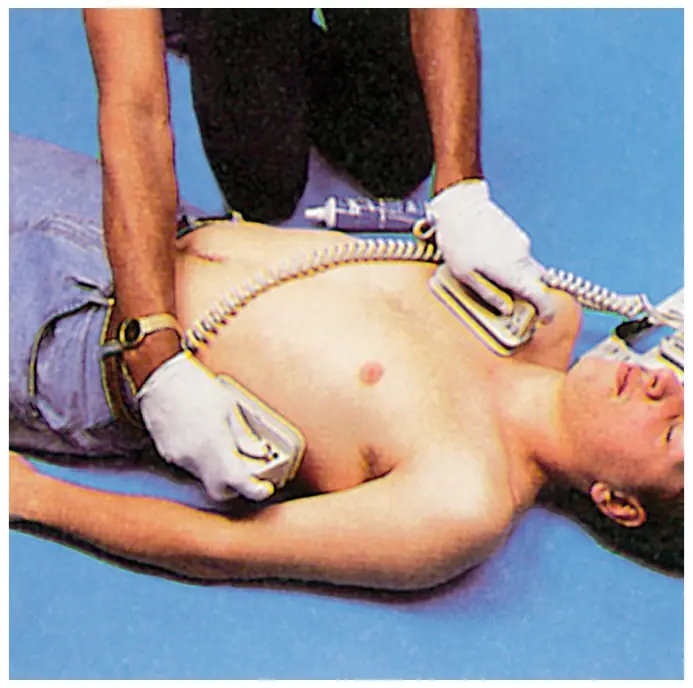

نسخه استخراجشده؛ ترجمه یا تأیید علمی انجام نشده است. وضعیت: captured
دستیارت CPR را شروع کرده و منشی، دستگاه AED ساختمان را آورده است. تا حالا با آن کار نکردهای و میترسی شوک بیجا بدهی. آیا دستگاه بدون تشخیص تو شوک میدهد؟
AED (دفیبریلاتور خارجی خودکار) ریتم قلب را خودش تحلیل میکند و فقط وقتی ریتم «قابل شوک» ببیند، شوک را پیشنهاد میدهد. هر مرحله را هم با صدا میگوید؛ برای همین کار با آن ساده است و آموزش احیای پایه برای استفادهاش کافی است.
نکتهی طلایی: هرچه شوک زودتر برسد، شانس زنده ماندن بیشتر است. AED را به محض رسیدن وصل کن؛ بهتر است در ۳ تا ۵ دقیقهی اول پس از افتادن بیمار. پس هر مطب دندانپزشکی باید یک AED در دسترس داشته باشد.
اشتباه رایج: بعد از شوک، نبض گرفتن و منتظر ماندن. CPR را بیدرنگ از سر بگیر؛ بررسی ریتم کار دستگاه است که هر ۲ دقیقه انجامش میدهد.
